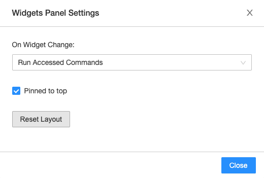

Databricks widgets
Input widgets allow you to add parameters to your notebooks and dashboards. The widget API consists of calls to create various types of input widgets, remove them, and get bound values.
If you are running Databricks Runtime 11.0 or above, you can also use ipywidgets in Databricks notebooks.
Databricks widgets are best for:
Building a notebook or dashboard that is re-executed with different parameters
Quickly exploring results of a single query with different parameters
To view the documentation for the widget API in Scala, Python, or R, use the following command: dbutils.widgets.help()
Databricks widget types
There are 4 types of widgets:
text: Input a value in a text box.dropdown: Select a value from a list of provided values.combobox: Combination of text and dropdown. Select a value from a provided list or input one in the text box.multiselect: Select one or more values from a list of provided values.
Widget dropdowns and text boxes appear immediately following the notebook toolbar.
Databricks widget API
The widget API is designed to be consistent in Scala, Python, and R. The widget API in SQL is slightly different, but equivalent to the other languages. You manage widgets through the Databricks Utilities (dbutils) reference interface.
The first argument for all widget types is
name. This is the name you use to access the widget.The second argument is
defaultValue; the widget’s default setting.The third argument is for all widget types except
textischoices, a list of values the widget can take on. This argument is not used fortexttype widgets.The last argument is
label, an optional value for the label shown over the widget text box or dropdown.
Widgets only accept string values. The rest of this article provides examples of how to use widgets in Python and SQL.
Databricks widget example
To see detailed API documentation for each method, use dbutils.widgets.help("<method-name>"). The help API is identical in all languages. For example:
dbutils.widgets.help("dropdown")
Create a simple dropdown widget.
dbutils.widgets.dropdown("state", "CA", ["CA", "IL", "MI", "NY", "OR", "VA"])
CREATE WIDGET DROPDOWN state DEFAULT "CA" CHOICES SELECT * FROM (VALUES ("CA"), ("IL"), ("MI"), ("NY"), ("OR"), ("VA"))
Interact with the widget from the widget panel.
You can access the current value of the widget with the call:
dbutils.widgets.get("state")
SELECT "${state}"
Finally, you can remove a widget or all widgets in a notebook:
dbutils.widgets.remove("state")
dbutils.widgets.removeAll()
REMOVE WIDGET state
If you remove a widget, you cannot create a widget in the same cell. You must create the widget in another cell.
Using widget values in Spark SQL
Spark SQL accesses widget values as string literals that can be used in queries.
You can access widgets defined in any language from Spark SQL while executing notebooks interactively. Consider the following workflow:
Create a dropdown widget of all databases in the current catalog:
dbutils.widgets.dropdown("database", "default", [database[0] for database in spark.catalog.listDatabases()])
Create a text widget to manually specify a table name:
dbutils.widgets.text("table", "")
Run a SQL query to see all tables in a database (selected from the dropdown list):
SHOW TABLES IN ${database}
Manually enter a table name into the
tablewidget.Preview the contents of a table without needing to edit the contents of the query:
SELECT * FROM ${database}.${table} LIMIT 100
Note
In general, you cannot use widgets to pass arguments between different languages within a notebook. You can create a widget arg1 in a Python cell and use it in a SQL or Scala cell if you run one cell at a time. However, this does not work if you use Run All or run the notebook as a job.
Workarounds:
For notebooks that do not mix languages, you can create a notebook for each language and pass the arguments when you run the notebook.
You can access the widget using a
spark.sql()call. For example, in Python:spark.sql("select getArgument('arg1')").take(1)[0][0].
Note
To escape the $ character in a SQL string literal, use \$. For example, to express the string $1,000, use "\$1,000". The $ character cannot be escaped for SQL identifiers.
Configure widget settings
You can configure the behavior of widgets when a new value is selected, whether the widget panel is always pinned to the top of the notebook, and change the layout of widgets in the notebook.
Click the icon at the right end of the Widget panel.
In the pop-up Widget Panel Settings dialog box, choose the widget’s execution behavior.
Run Notebook: Every time a new value is selected, the entire notebook is rerun.
Run Accessed Commands: Every time a new value is selected, only cells that retrieve the values for that particular widget are rerun. This is the default setting when you create a widget. SQL cells are not rerun in this configuration.
Do Nothing: Every time a new value is selected, nothing is rerun.
To pin the widgets to the top of the notebook or to place the widgets above the first cell, click . The setting is saved on a per-user basis. Click the thumbtack icon again to reset to the default behavior.
If you have Can Manage permission for notebooks, you can configure the widget layout by clicking
 . Each widget’s order and size can be customized. To save or dismiss your changes, click .
. Each widget’s order and size can be customized. To save or dismiss your changes, click .The widget layout is saved with the notebook. If you change the widget layout from the default configuration, new widgets are not added in alphabetical order.
To reset the widget layout to a default order and size, click to open the Widget Panel Settings dialog and then click Reset Layout. The
removeAll()command does not reset the widget layout.
Example notebook
You can see a demo of how the Run Accessed Commands setting works in the following notebook. The year widget is created with setting 2014 and is used in DataFrame API and SQL commands.
When you change the setting of the year widget to 2007, the DataFrame command reruns, but the SQL command is not rerun.
Databricks widgets in dashboards
When you create a dashboard from a notebook that has input widgets, all the widgets display at the top of the dashboard. In presentation mode, every time you update value of a widget you can click the Update button to re-run the notebook and update your dashboard with new values.
Use Databricks widgets with %run
If you run a notebook that contains widgets, the specified notebook is run with the widget’s default values. You can also pass in values to widgets. For example:
%run /path/to/notebook $X="10" $Y="1"
This example runs the specified notebook and passes 10 into widget X and 1 into widget Y.
Limitations
The following limits apply to widgets:
A maximum of 512 widgets can be created in a notebook.
A widget name is limited to 1024 characters.
A widget label is limited to 2048 characters.
A maximum of 2048 characters can be input to a text widget.
There can be a maximum of 1024 choices for a multi-select, combo box, or dropdown widget.
There is a known issue where a widget state may not properly clear after pressing Run All, even after clearing or removing the widget in code. If this happens, you will see a discrepancy between the widget’s visual state and its printed state. Re-running the cells individually may bypass this issue. To avoid this issue entirely, Databricks recommends that you use ipywidgets.